12 Introduction to Spark
Apache SparkTM is a fast and general-purpose engine for large-scale data processing. Spark aims at achieving the following goals in the Big data context:
- Generality: diverse workloads, operators, job sizes
- Low latency: sub-second
- Fault tolerance: faults are the norm, not the exception
- Simplicity: often comes from generality
Originally developed at the University of California - Berkeley’s AMPLab
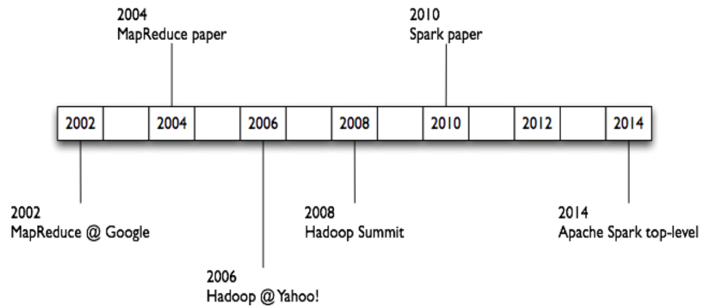
Motivations
MapReduce and Spark iterative jobs and data I/O
Iterative jobs, with MapReduce, involve a lot of disk I/O for each iteration and stage, and disk I/O is very slow (even if it is local I/O)
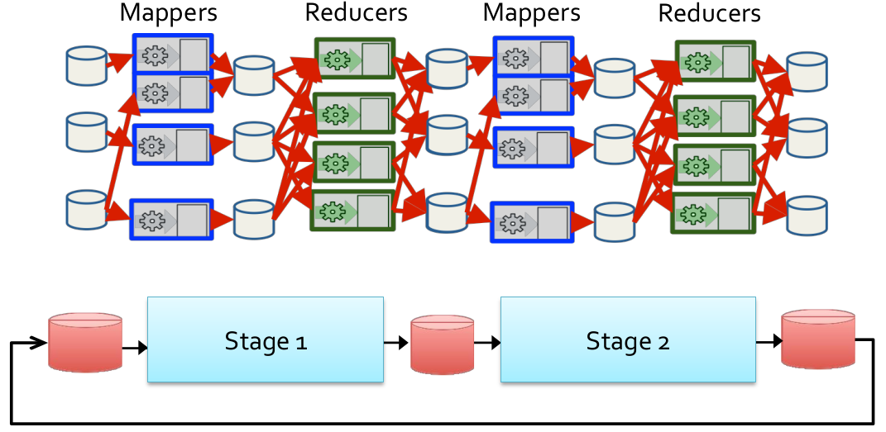
- Motivation: using MapReduce for complex iterative jobs or multiple jobs on the same data involves lots of disk I/O
- Opportunity: the cost of main memory decreased, hence, large main memories are available in each server
- Solution: keep more data in main memory, and that’s the basic idea of Spark
So an iterative job in MapReduce makes wide use of disk reading/writing
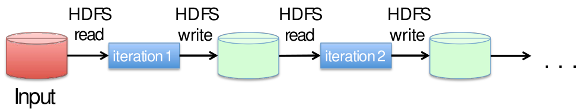
Instead, an iterative job in Spark uses the main memory
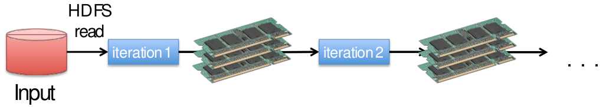
Data (or at least part of it) are shared between the iterations by using the main memory , which is 10 to 100 times faster than disk.
Moreover, to run multiple queries on the same data, in MapReduce the data must be read multiple times (once for each query)
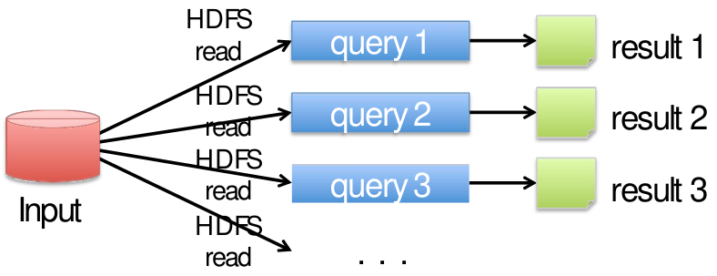
Instead, in Spark the data have to be loaded only once in the main memory
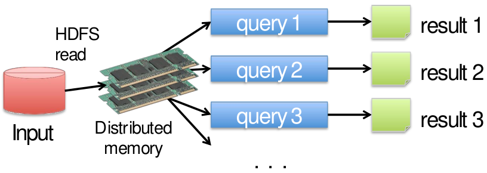
In other words, data are read only once from HDFS and stored in main memory, splitting of the data across the main memory of each server.
Resilient distributed data sets (RDDs)
In Spark, data are represented as Resilient Distributed Datasets (RDDs), which are Partitioned/Distributed collections of objects spread across the nodes of a cluster, and are stored in main memory (when it is possible) or on local disk.
Spark programs are written in terms of operations on resilient distributed data sets.
RDDs are built and manipulated through a set of parallel transformations (e.g., map, filter, join) and actions (e.g., count, collect, save), and RDDs are automatically rebuilt on machine failure.
The Spark computing framework provides a programming abstraction (based on RDDs) and transparent mechanisms to execute code in parallel on RDDs
- It hides complexities of fault-tolerance and slow machines
- It manages scheduling and synchronization of the jobs
MapReduce vs Spark
| Hadoop MapReduce | Spark | |
|---|---|---|
| Storage | Disk only | In-memory or on disk |
| Operations | Map and Reduce | Map, Reduce, Join, Sample, … |
| Execution model | Batch | Batch, interactive, streaming |
| Programming environments | Java | Scala, Java, Python, R |
With respect to MapReduce, Spark has a lower overhead for starting jobs and has less expensive shuffles.
In-memory RDDs can make a big difference in performance
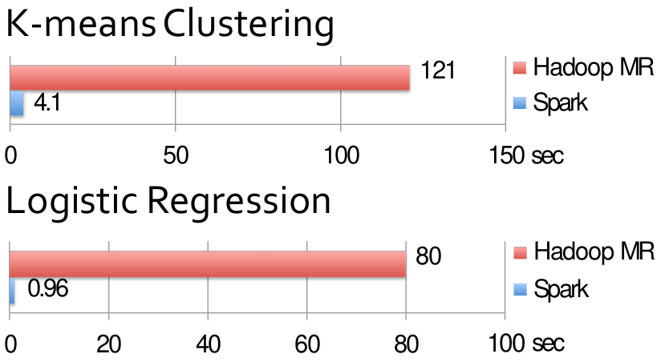
Main components
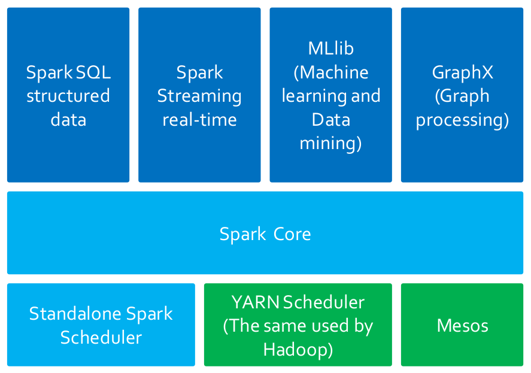
Spark is based on a basic component (the Spark Core component) that is exploited by all the high-level data analytics components: this solution provides a more uniform and efficient solution with respect to Hadoop where many non-integrated tools are available. In this way, when the efficiency of the core component is increased also the efficiency of the other high-level components increases.
Spark Core
Spark Core contains the basic functionalities of Spark exploited by all components
- Task scheduling
- Memory management
- Fault recovery
- …
It provides the APIs that are used to create RDDs and applies transformations and actions on them.
Spark SQL
Spark SQL for structured data is used to interact with structured datasets by means of the SQL language or specific querying APIs (based on Datasets).
It exploits a query optimizer engine, and supports also Hive Query Language (HQL). It interacts with many data sources (e.g., Hive Tables, Parquet, Json).
Spark Streaming
Spark Streaming for real-time data is used to process live streams of data in real-time. The APIs of the Streaming real-time components operated on RDDs and are similar to the ones used to process standard RDDs associated with “static” data sources.
MLlib
MLlib is a machine learning/data mining library that can be used to apply the parallel versions of some machine learning/data mining algorithms
- Data preprocessing and dimensional reduction
- Classification algorithms
- Clustering algorithms
- Itemset mining
- …
GraphX and GraphFrames
GraphX is a graph processing library that provides algorithms for manipulating graphs (e.g., subgraph searching, PageRank). Notice that the Python version is not available.
GraphFrames is a graph library based on DataFrames and Python.
Spark schedulers
Spark can exploit many schedulers to execute its applications
- Hadoop YARN: it is the standard scheduler of Hadoop
- Mesos cluster: another popular scheduler
- Standalone Spark Scheduler: a simple cluster scheduler included in Spark
Basic concepts
Resilient Distributed Data sets (RDDs)
RDDs are the primary abstraction in Spark: they are distributed collections of objects spread across the nodes of a clusters, which means that they are split in partitions, and each node of the cluster that is running an application contains at least one partition of the RDD(s) that is (are) defined in the application.
RDDs are stored in the main memory of the executors running in the nodes of the cluster (when it is possible) or in the local disk of the nodes if there is not enough main memory. This allows to execute in parallel the code invoked on eah node: each executor of a worker node runs the specified code on its partition of the RDD.
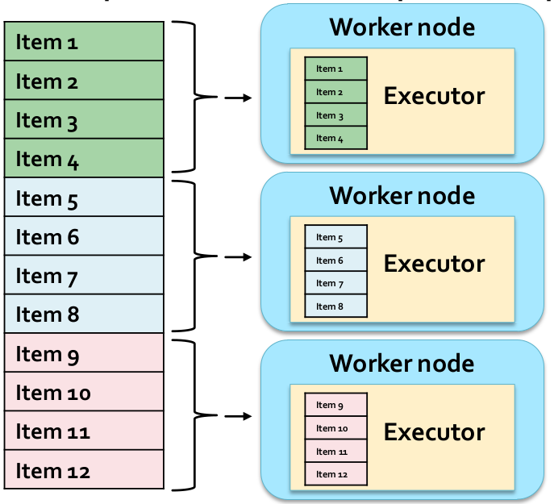
More partitions mean more parallelism.
RDDs are immutable once constructed (i.e., the content of an RDD cannot be modified). Spark tracks lineage information to efficiently recompute lost data in case of failures of some executors: for each RDD, Spark knows how it has been constructed and can rebuilt it if a failure occurs. This information is represented by means of a DAG (Direct Acyclic Graph) connecting input data and RDDs.
RDDs can be created
- by parallelizing existing collections of the hosting programming language (e.g., collections and lists of Scala, Java, Pyhton, or R): in this case the number of partition is specified by the user
- from (large) files stored in HDFS: in this case there is one partition per HDFS block
- from files stored in many traditional file systems or databases
- by transforming an existing RDDs: in this case the number of partitions depends on the type of transformation
Spark programs are written in terms of operations on resilient distributed data sets
- Transformations: map, filter, join, …
- Actions: count, collect, save, …
To summarize, in the Spark framework
- Spark manages scheduling and synchronization of the jobs
- Spark manages the split of RDDs in partitions and allocates RDDs partitions in the nodes of the cluster
- Spark hides complexities of fault-tolerance and slow machines (RDDs are automatically rebuilt in case of machine failures)
Spark Programs
Supported languages
Spark supports many programming languages
- Scala: this is the language used to develop the Spark framework and all its components (Spark Core, Spark SQL, Spark Streaming, MLlib, GraphX)
- Java
- Python
- R
Structure of Spark programs
| Term | Definition |
|---|---|
| Application | User program built on Spark, consisting of a driver program and executors on the cluster. |
| Driver program | The process running the main() function of the application and creating the SparkContext. |
| Cluster manager | An external service for acquiring resources on the cluster (e.g. standalone manager, Mesos, YARN). |
| Deploy mode | It distinguishes where the driver process runs: in “cluster” mode (in this case the framework launches the driver inside of the cluster) or in “client” mode (in this case the submitter launches the driver outside of the cluster). |
| Worker node | Any node of the cluster that can run application code in the cluster. |
| Executor | A process launched for an application on a worker node, that runs tasks and keeps data in memory or disk storage across them; each application has its own executors. |
| Task | A unit of work that will be sent to one executor. |
| Job | A parallel computation consisting of multiple tasks that gets spawned in response to a Spark action (e.g. save, collect). |
| Stage | Each job gets divided into smaller sets of tasks called stages, such that the output of one stage is the input of the next stage(s), except for the stages that compute (part of) the final result (i.e., the stages without output edges in the graph representing the workflow of the application). Indeed, the outputs of those stages is stored in HDFS or a database. |
The shuffle operation is always executed between two stages
- Data must be grouped/repartitioned based on a grouping criteria that is different with respect to the one used in the previous stage
- Similar to the shuffle operation between the map and the reduce phases in MapReduce
- Shuffle is a heavy operation
See the official documentation for more.
The Driver program contains the main method. It defines the workflow of the application, and accesses Spark through the SparkContext object, which represents a connection to the cluster.
The Driver program defines Resilient Distributed Datasets (RDDs) that are allocated in the nodes of the cluster, and invokes parallel operations on RDDs.
The Driver program defines
- Local variables: these are standard variables of the Python programs
- RDDs: these are distributed variables stored in the nodes of the cluster
- The
SparkContextobject, which allows to- create RDDs
- submit executors (processes) that execute in parallel specific operations on RDDs
- perform Transformations and Actions
The worker nodes of the cluster are used to run your application by means of executors. Each executor runs on its partition of the RDD(s) the operations that are specified in the driver.
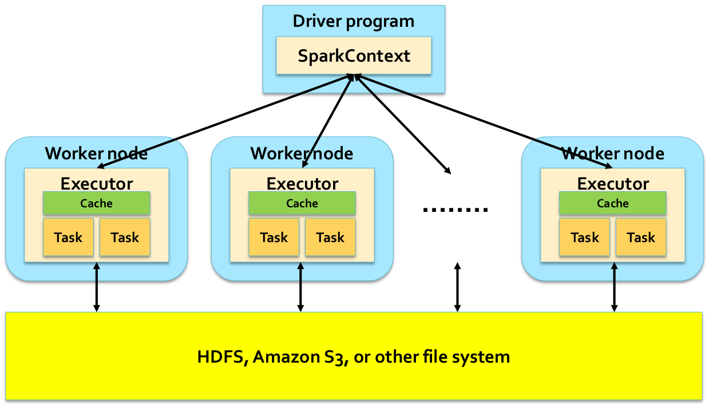
RDDs are distributed across executors (each RDD is split in partitions that are spread across the available executors).
Local execution of Spark
Spark programs can also be executed locally: local threads are used to parallelize the execution of the application on RDDs on a single PC. Local threads can be seen are “pseudo-worker” nodes, and a local scheduler is launched to run Spark programs locally. It is useful to develop and test the applications before deploying them on the cluster.
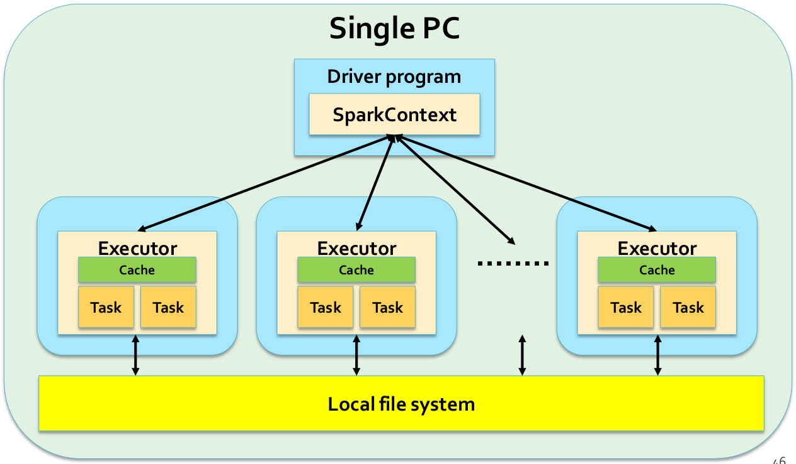
Spark program examples
Count line program
The steps of this program are
- count the number of lines of the input file, whose name is set to “myfile.txt”
- print the results on the standard output
from pyspark import SparkConf, SparkContext
if __name__ == "__main__":
## Create a configuration object and
## set the name of the application
conf = SparkConf().setAppName("Spark Line Count")
## Create a Spark Context object
sc = SparkContext(conf=conf)
## Store the path of the input file in inputfile
inputFile= "myfile.txt"
## Build an RDD of Strings from the input textual file
## Each element of the RDD is a line of the input file
linesRDD = sc.textFile(inputFile)
## Count the number of lines in the input file
## Store the returned value in the local variable numLines
numLines = linesRDD.count()
## Print the output in the standard output
print("NumLines:", numLines)
## Close the Spark Context object
sc.stop()- 1
- Local Python variable: it is allocated in the main memory of the same process instancing the Driver.
- 2
- It is allocated/stored in the main memory or in the local disk of the executors of the worker nodes.
- Local variables can be used to store only “small” objects/data (i.e., the maximum size is equal to the main memory of the process associated with the Driver)
- RDDs are used to store “big/large” collections of objects/data in the nodes of the cluster
- In the main memory of the worker nodes, when it is possible
- In the local disks of the worker nodes, when it is necessary
Word Count program
In the Word Count implemented by means of Spark
- The name of the input file is specified by using a command line parameter (i.e.,
argv[1]) - The output of the application (i.e., the pairs (word, number of occurrences) are stored in an output folder (i.e.,
argv[2]))
Notice that there is no need to worry about the details.
from pyspark import SparkConf, SparkContext
import sys
if __name__ == "__main__":
"""
Word count example
"""
inputFile= sys.argv[1]
outputPath = sys.argv[2]
## Create a configuration object and
## set the name of the application
conf = SparkConf().setAppName("Spark Word Count")
## Create a Spark Context object
sc = SparkContext(conf=conf)
## Build an RDD of Strings from the input textual file
## Each element of the RDD is a line of the input file
lines = sc.textFile(inputFile)
## Split/transform the content of lines in a
## list of words and store them in the words RDD
words = lines.flatMap(lambda line: line.split(sep=' '))
## Map/transform each word in the words RDD
## to a pair/tuple (word,1) and store the result
## in the words_one RDD
words_one = words.map(lambda word: (word, 1))
## Count the num. of occurrences of each word.
## Reduce by key the pairs of the words_one RDD and store
## the result (the list of pairs (word, num. of occurrences)
## in the counts RDD
counts = words_one.reduceByKey(lambda c1, c2: c1 + c2)
## Store the result in the output folder
counts.saveAsTextFile(outputPath)
## Close/Stop the Spark Context object
sc.stop()